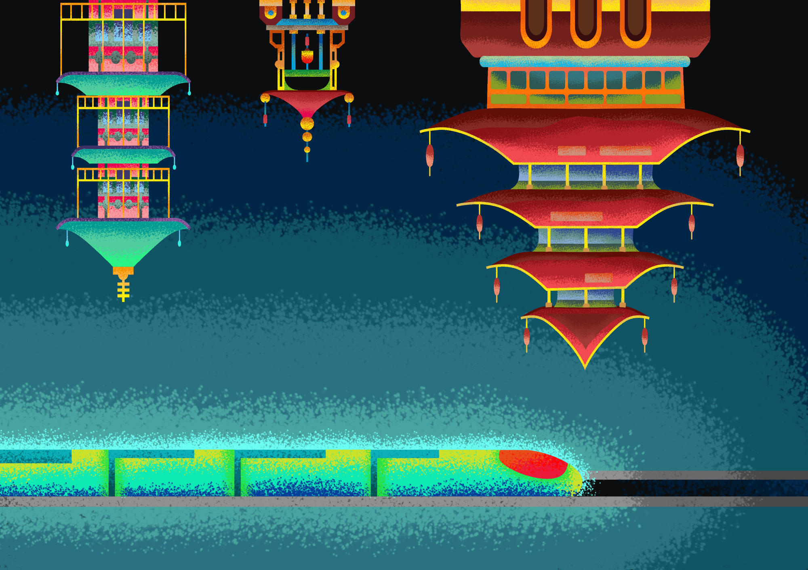
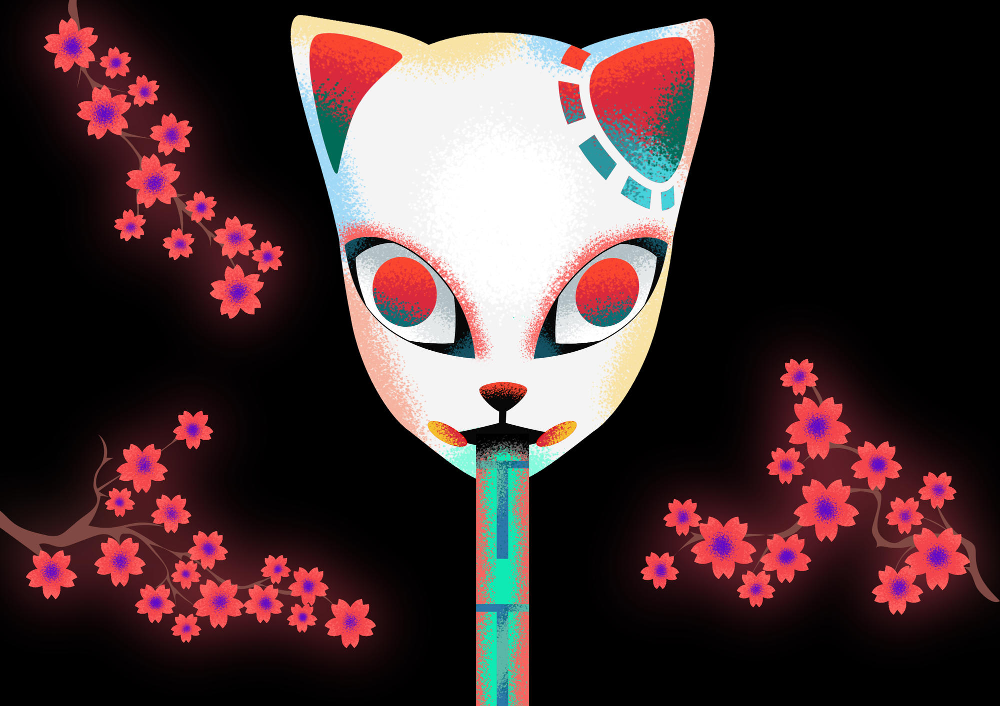
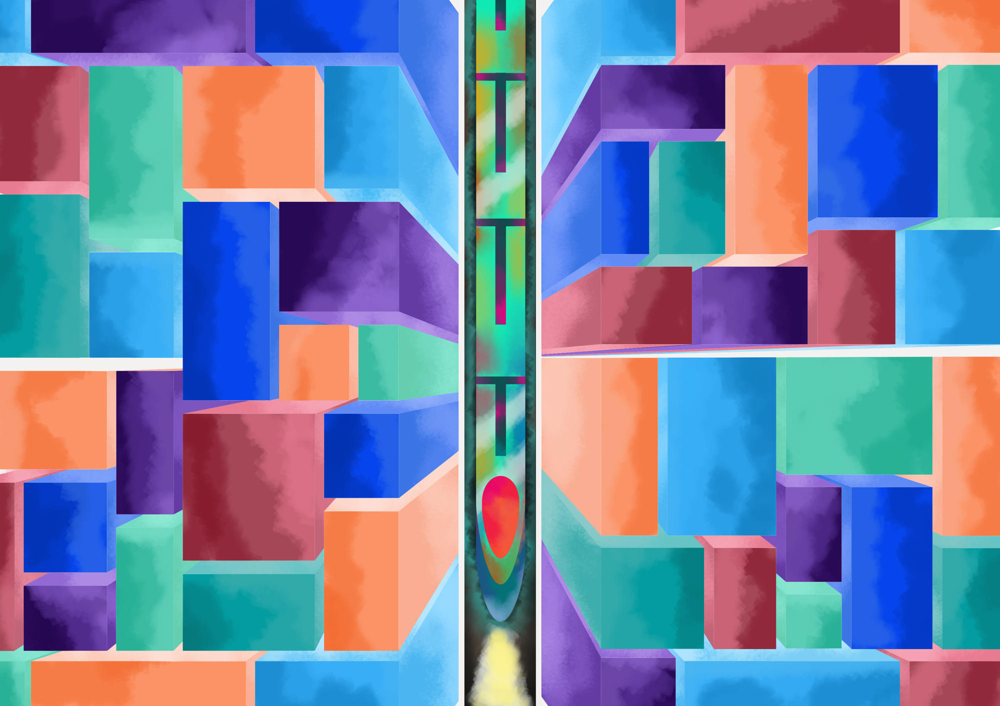

Narrative Illustration
— Bullet train
Narrative illustration and editorial layout project based on the film "Bullet Train".
This narrative illustration and editorial layout project is based on the film "Bullet Train", exploring a futuristic visual approach in a Japanese context. The illustrations capture the enigmatic and colorful essence of the film, using grainy strokes to emphasize its distinctive style.

The first illustration features a bullet train entering in a Japanese kitsune mask. This symbolic design combines traditional Japanese elements with a futuristic aesthetic, highlighting the fusion of ancient and modern. The cherry blossoms add a touch of serenity and ephemeral beauty, contrasting with the advanced technology of the bullet train.

The second one depicts a bullet train sailing through the air in a Japanese city where the traditional architecture is reversed. This concept plays with perception and reality, offering a surreal reinterpretation of modern Japanese urbanization. The vibrant colors and dynamics highlight the speed and energy of the bullet train, creating a environment that reflects the intrigue and fast pace of the film.
The tools used for the creation of these illustrations were Adobe Illustrator, Adobe photoshop, and Adobe InDesign.
